# Import necessary libraries
import seaborn as sns
import matplotlib.pyplot as plt
import numpy as np# Step 1: Load the car_crashes dataset
car_crashes = sns.load_dataset("car_crashes")
car_crashes| total | speeding | alcohol | not_distracted | no_previous | ins_premium | ins_losses | abbrev | |
|---|---|---|---|---|---|---|---|---|
| 0 | 18.8 | 7.332 | 5.640 | 18.048 | 15.040 | 784.55 | 145.08 | AL |
| 1 | 18.1 | 7.421 | 4.525 | 16.290 | 17.014 | 1053.48 | 133.93 | AK |
| 2 | 18.6 | 6.510 | 5.208 | 15.624 | 17.856 | 899.47 | 110.35 | AZ |
| 3 | 22.4 | 4.032 | 5.824 | 21.056 | 21.280 | 827.34 | 142.39 | AR |
| 4 | 12.0 | 4.200 | 3.360 | 10.920 | 10.680 | 878.41 | 165.63 | CA |
| 5 | 13.6 | 5.032 | 3.808 | 10.744 | 12.920 | 835.50 | 139.91 | CO |
| 6 | 10.8 | 4.968 | 3.888 | 9.396 | 8.856 | 1068.73 | 167.02 | CT |
| 7 | 16.2 | 6.156 | 4.860 | 14.094 | 16.038 | 1137.87 | 151.48 | DE |
| 8 | 5.9 | 2.006 | 1.593 | 5.900 | 5.900 | 1273.89 | 136.05 | DC |
| 9 | 17.9 | 3.759 | 5.191 | 16.468 | 16.826 | 1160.13 | 144.18 | FL |
| 10 | 15.6 | 2.964 | 3.900 | 14.820 | 14.508 | 913.15 | 142.80 | GA |
| 11 | 17.5 | 9.450 | 7.175 | 14.350 | 15.225 | 861.18 | 120.92 | HI |
| 12 | 15.3 | 5.508 | 4.437 | 13.005 | 14.994 | 641.96 | 82.75 | ID |
| 13 | 12.8 | 4.608 | 4.352 | 12.032 | 12.288 | 803.11 | 139.15 | IL |
| 14 | 14.5 | 3.625 | 4.205 | 13.775 | 13.775 | 710.46 | 108.92 | IN |
| 15 | 15.7 | 2.669 | 3.925 | 15.229 | 13.659 | 649.06 | 114.47 | IA |
| 16 | 17.8 | 4.806 | 4.272 | 13.706 | 15.130 | 780.45 | 133.80 | KS |
| 17 | 21.4 | 4.066 | 4.922 | 16.692 | 16.264 | 872.51 | 137.13 | KY |
| 18 | 20.5 | 7.175 | 6.765 | 14.965 | 20.090 | 1281.55 | 194.78 | LA |
| 19 | 15.1 | 5.738 | 4.530 | 13.137 | 12.684 | 661.88 | 96.57 | ME |
| 20 | 12.5 | 4.250 | 4.000 | 8.875 | 12.375 | 1048.78 | 192.70 | MD |
| 21 | 8.2 | 1.886 | 2.870 | 7.134 | 6.560 | 1011.14 | 135.63 | MA |
| 22 | 14.1 | 3.384 | 3.948 | 13.395 | 10.857 | 1110.61 | 152.26 | MI |
| 23 | 9.6 | 2.208 | 2.784 | 8.448 | 8.448 | 777.18 | 133.35 | MN |
| 24 | 17.6 | 2.640 | 5.456 | 1.760 | 17.600 | 896.07 | 155.77 | MS |
| 25 | 16.1 | 6.923 | 5.474 | 14.812 | 13.524 | 790.32 | 144.45 | MO |
| 26 | 21.4 | 8.346 | 9.416 | 17.976 | 18.190 | 816.21 | 85.15 | MT |
| 27 | 14.9 | 1.937 | 5.215 | 13.857 | 13.410 | 732.28 | 114.82 | NE |
| 28 | 14.7 | 5.439 | 4.704 | 13.965 | 14.553 | 1029.87 | 138.71 | NV |
| 29 | 11.6 | 4.060 | 3.480 | 10.092 | 9.628 | 746.54 | 120.21 | NH |
| 30 | 11.2 | 1.792 | 3.136 | 9.632 | 8.736 | 1301.52 | 159.85 | NJ |
| 31 | 18.4 | 3.496 | 4.968 | 12.328 | 18.032 | 869.85 | 120.75 | NM |
| 32 | 12.3 | 3.936 | 3.567 | 10.824 | 9.840 | 1234.31 | 150.01 | NY |
| 33 | 16.8 | 6.552 | 5.208 | 15.792 | 13.608 | 708.24 | 127.82 | NC |
| 34 | 23.9 | 5.497 | 10.038 | 23.661 | 20.554 | 688.75 | 109.72 | ND |
| 35 | 14.1 | 3.948 | 4.794 | 13.959 | 11.562 | 697.73 | 133.52 | OH |
| 36 | 19.9 | 6.368 | 5.771 | 18.308 | 18.706 | 881.51 | 178.86 | OK |
| 37 | 12.8 | 4.224 | 3.328 | 8.576 | 11.520 | 804.71 | 104.61 | OR |
| 38 | 18.2 | 9.100 | 5.642 | 17.472 | 16.016 | 905.99 | 153.86 | PA |
| 39 | 11.1 | 3.774 | 4.218 | 10.212 | 8.769 | 1148.99 | 148.58 | RI |
| 40 | 23.9 | 9.082 | 9.799 | 22.944 | 19.359 | 858.97 | 116.29 | SC |
| 41 | 19.4 | 6.014 | 6.402 | 19.012 | 16.684 | 669.31 | 96.87 | SD |
| 42 | 19.5 | 4.095 | 5.655 | 15.990 | 15.795 | 767.91 | 155.57 | TN |
| 43 | 19.4 | 7.760 | 7.372 | 17.654 | 16.878 | 1004.75 | 156.83 | TX |
| 44 | 11.3 | 4.859 | 1.808 | 9.944 | 10.848 | 809.38 | 109.48 | UT |
| 45 | 13.6 | 4.080 | 4.080 | 13.056 | 12.920 | 716.20 | 109.61 | VT |
| 46 | 12.7 | 2.413 | 3.429 | 11.049 | 11.176 | 768.95 | 153.72 | VA |
| 47 | 10.6 | 4.452 | 3.498 | 8.692 | 9.116 | 890.03 | 111.62 | WA |
| 48 | 23.8 | 8.092 | 6.664 | 23.086 | 20.706 | 992.61 | 152.56 | WV |
| 49 | 13.8 | 4.968 | 4.554 | 5.382 | 11.592 | 670.31 | 106.62 | WI |
| 50 | 17.4 | 7.308 | 5.568 | 14.094 | 15.660 | 791.14 | 122.04 | WY |
car_crashes.info<bound method DataFrame.info of total speeding alcohol not_distracted no_previous ins_premium \
0 18.8 7.332 5.640 18.048 15.040 784.55
1 18.1 7.421 4.525 16.290 17.014 1053.48
2 18.6 6.510 5.208 15.624 17.856 899.47
3 22.4 4.032 5.824 21.056 21.280 827.34
4 12.0 4.200 3.360 10.920 10.680 878.41
5 13.6 5.032 3.808 10.744 12.920 835.50
6 10.8 4.968 3.888 9.396 8.856 1068.73
7 16.2 6.156 4.860 14.094 16.038 1137.87
8 5.9 2.006 1.593 5.900 5.900 1273.89
9 17.9 3.759 5.191 16.468 16.826 1160.13
10 15.6 2.964 3.900 14.820 14.508 913.15
11 17.5 9.450 7.175 14.350 15.225 861.18
12 15.3 5.508 4.437 13.005 14.994 641.96
13 12.8 4.608 4.352 12.032 12.288 803.11
14 14.5 3.625 4.205 13.775 13.775 710.46
15 15.7 2.669 3.925 15.229 13.659 649.06
16 17.8 4.806 4.272 13.706 15.130 780.45
17 21.4 4.066 4.922 16.692 16.264 872.51
18 20.5 7.175 6.765 14.965 20.090 1281.55
19 15.1 5.738 4.530 13.137 12.684 661.88
20 12.5 4.250 4.000 8.875 12.375 1048.78
21 8.2 1.886 2.870 7.134 6.560 1011.14
22 14.1 3.384 3.948 13.395 10.857 1110.61
23 9.6 2.208 2.784 8.448 8.448 777.18
24 17.6 2.640 5.456 1.760 17.600 896.07
25 16.1 6.923 5.474 14.812 13.524 790.32
26 21.4 8.346 9.416 17.976 18.190 816.21
27 14.9 1.937 5.215 13.857 13.410 732.28
28 14.7 5.439 4.704 13.965 14.553 1029.87
29 11.6 4.060 3.480 10.092 9.628 746.54
30 11.2 1.792 3.136 9.632 8.736 1301.52
31 18.4 3.496 4.968 12.328 18.032 869.85
32 12.3 3.936 3.567 10.824 9.840 1234.31
33 16.8 6.552 5.208 15.792 13.608 708.24
34 23.9 5.497 10.038 23.661 20.554 688.75
35 14.1 3.948 4.794 13.959 11.562 697.73
36 19.9 6.368 5.771 18.308 18.706 881.51
37 12.8 4.224 3.328 8.576 11.520 804.71
38 18.2 9.100 5.642 17.472 16.016 905.99
39 11.1 3.774 4.218 10.212 8.769 1148.99
40 23.9 9.082 9.799 22.944 19.359 858.97
41 19.4 6.014 6.402 19.012 16.684 669.31
42 19.5 4.095 5.655 15.990 15.795 767.91
43 19.4 7.760 7.372 17.654 16.878 1004.75
44 11.3 4.859 1.808 9.944 10.848 809.38
45 13.6 4.080 4.080 13.056 12.920 716.20
46 12.7 2.413 3.429 11.049 11.176 768.95
47 10.6 4.452 3.498 8.692 9.116 890.03
48 23.8 8.092 6.664 23.086 20.706 992.61
49 13.8 4.968 4.554 5.382 11.592 670.31
50 17.4 7.308 5.568 14.094 15.660 791.14
ins_losses abbrev
0 145.08 AL
1 133.93 AK
2 110.35 AZ
3 142.39 AR
4 165.63 CA
5 139.91 CO
6 167.02 CT
7 151.48 DE
8 136.05 DC
9 144.18 FL
10 142.80 GA
11 120.92 HI
12 82.75 ID
13 139.15 IL
14 108.92 IN
15 114.47 IA
16 133.80 KS
17 137.13 KY
18 194.78 LA
19 96.57 ME
20 192.70 MD
21 135.63 MA
22 152.26 MI
23 133.35 MN
24 155.77 MS
25 144.45 MO
26 85.15 MT
27 114.82 NE
28 138.71 NV
29 120.21 NH
30 159.85 NJ
31 120.75 NM
32 150.01 NY
33 127.82 NC
34 109.72 ND
35 133.52 OH
36 178.86 OK
37 104.61 OR
38 153.86 PA
39 148.58 RI
40 116.29 SC
41 96.87 SD
42 155.57 TN
43 156.83 TX
44 109.48 UT
45 109.61 VT
46 153.72 VA
47 111.62 WA
48 152.56 WV
49 106.62 WI
50 122.04 WY >car_crashes.head(5)| total | speeding | alcohol | not_distracted | no_previous | ins_premium | ins_losses | abbrev | |
|---|---|---|---|---|---|---|---|---|
| 0 | 18.8 | 7.332 | 5.640 | 18.048 | 15.040 | 784.55 | 145.08 | AL |
| 1 | 18.1 | 7.421 | 4.525 | 16.290 | 17.014 | 1053.48 | 133.93 | AK |
| 2 | 18.6 | 6.510 | 5.208 | 15.624 | 17.856 | 899.47 | 110.35 | AZ |
| 3 | 22.4 | 4.032 | 5.824 | 21.056 | 21.280 | 827.34 | 142.39 | AR |
| 4 | 12.0 | 4.200 | 3.360 | 10.920 | 10.680 | 878.41 | 165.63 | CA |
x = car_crashes['alcohol']
y = car_crashes['speeding']
plt.plot(x,y,'g-*',ms=10)
#Inference: The scatter plot shows the relationship between alcohol involvement and speeding involvement in car crashes.[<matplotlib.lines.Line2D at 0x789573727f70>]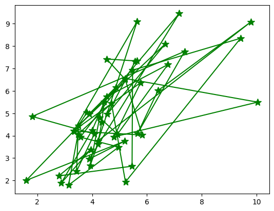
a = car_crashes['not_distracted']
b = car_crashes['no_previous']
plt.plot(a,b,'g->',ms=5,mec='b')
plt.grid()
#The graph represents the relationship between two variables, 'not_distracted' and 'no_previous,' in car crashes.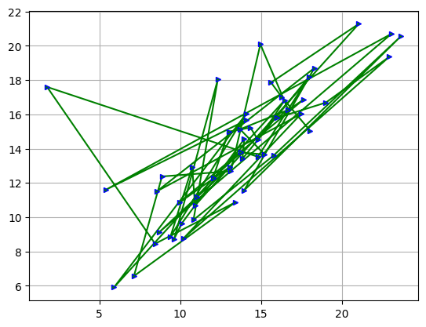
plt.subplot(2,2,1)
plt.plot(x,y,'g--')
plt.subplot(2,2,2)
plt.plot(x,y,'b*')
plt.subplot(2,2,3)
plt.plot(a,b,'b*')
plt.subplot(2,2,4)
plt.plot(a,b,'g--')
#Inferene: 2x2 grid of subplots, with each subplot displaying a relationship between two variables x,y and a,b[<matplotlib.lines.Line2D at 0x789573c363e0>]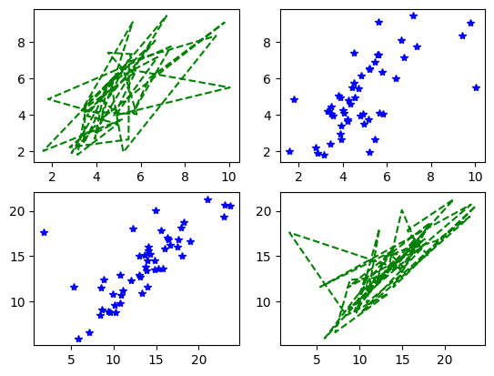
fig=plt.figure()
ax1=fig.add_axes([0.1,0.1,0.8,0.8])
ax2=fig.add_axes([0.2,0.5,0.4,0.3])
#[left,bottom,width,height]
ax1.plot(x,y)
ax2.plot(a,b)
#Inference: creating the subplot of two axes x,y and a,b[<matplotlib.lines.Line2D at 0x78957305b4f0>]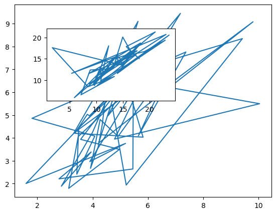
# Plot : Histogram of 'total' car crashes
sns.histplot(data=car_crashes, x="total", kde=True)
plt.xlabel("Total Car Crashes")
plt.ylabel("Frequency")
plt.show()
# Inference : This histogram shows the distribution of total car crashes. Most states have a relatively low number of car crashes, with a few outliers having significantly higher crash rates.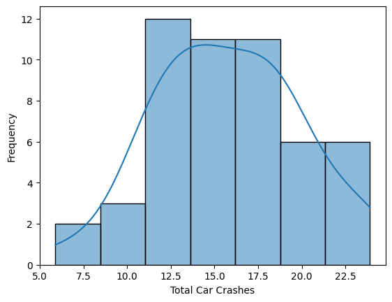
# Plot : Barplot of average 'total' car crashes by 'abbrev' (State Abbreviation)
sns.barplot(data=car_crashes, x="abbrev", y="total", ci=None)
plt.xlabel("State Abbreviation")
plt.ylabel("Average Total Car Crashes")
plt.xticks(rotation=90)
plt.show()
# Inference : This barplot displays the average total car crashes by state. We can see variations in car crash rates among different states, with some states having higher averages than others.<ipython-input-22-45887d3389a5>:2: FutureWarning:
The `ci` parameter is deprecated. Use `errorbar=None` for the same effect.
sns.barplot(data=car_crashes, x="abbrev", y="total", ci=None)
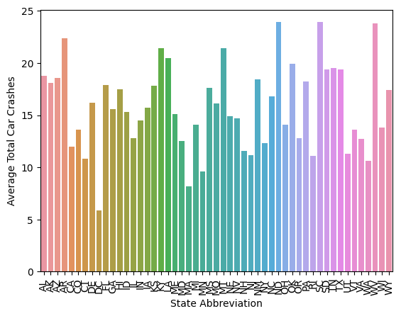
# Plot : Boxplot of 'alcohol' involvement in car crashes
sns.boxplot(data=car_crashes, x="alcohol", y="abbrev")
plt.xlabel("Alcohol Involvement")
plt.ylabel("State Abbreviation")
plt.show()
# Inference : This boxplot provides information on the distribution of alcohol involvement in car crashes across states. It helps identify states where alcohol is a significant factor in car accidents.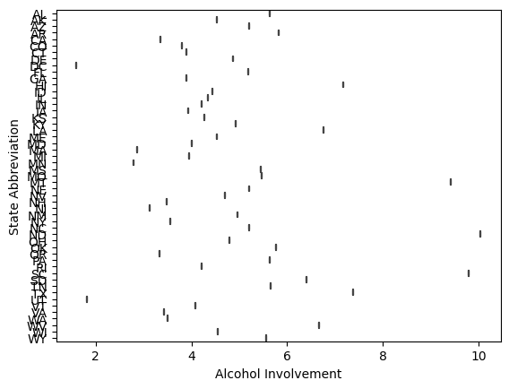
# Plot : Scatterplot of 'speeding' vs 'alcohol' involvement
sns.scatterplot(data=car_crashes, x="speeding", y="alcohol", hue="abbrev")
plt.xlabel("Speeding Involvement")
plt.ylabel("Alcohol Involvement")
plt.legend(title="State")
plt.show()
# Inference : This scatterplot shows the relationship between speeding and alcohol involvement in car crashes for each state. It helps identify any potential correlation or patterns between these variables.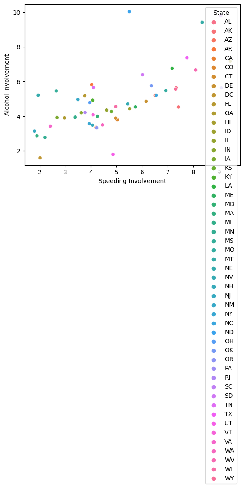
# Visualization : Distribution of Alcohol Involvement
sns.histplot(data=car_crashes, x="alcohol", kde=True)
plt.xlabel("Alcohol Involvement")
plt.ylabel("Frequency")
plt.show()
# Inference : This histogram provides a closer look at the distribution of alcohol involvement in car crashes. It helps identify the most common levels of alcohol involvement.
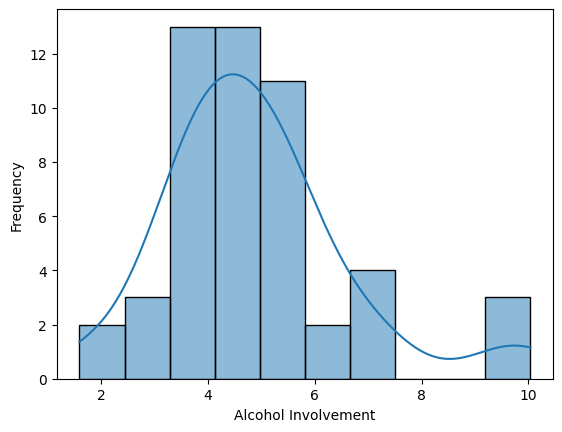
# Visualization : Boxplot of Speeding Involvement
sns.boxplot(data=car_crashes, x="speeding")
plt.xlabel("Speeding Involvement")
plt.show()
# Inference : The boxplot shows the spread of speeding involvement in car crashes. It helps identify the presence of outliers and the distribution of speeding rates.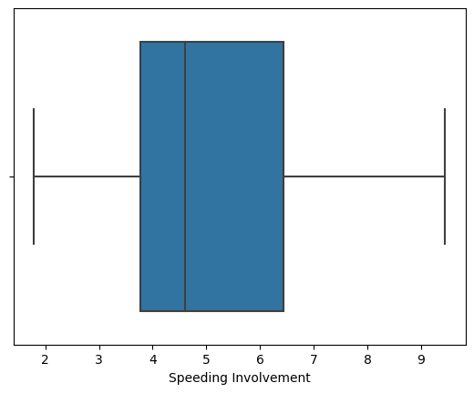
# Visualization : Countplot of States (Abbreviations)
sns.countplot(data=car_crashes, x="abbrev", order=car_crashes['abbrev'].value_counts().index)
plt.xlabel("State Abbreviation")
plt.ylabel("Count")
plt.xticks(rotation=90)
plt.show()
# Inference: This countplot displays the frequency of car crashes by state. It helps identify which states have the highest and lowest counts of car crashes.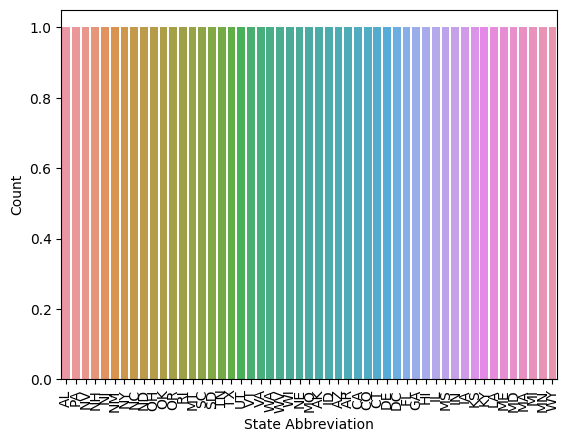
# Visualization : Correlation Heatmap
correlation_matrix = car_crashes.corr()
sns.heatmap(correlation_matrix, annot=True, cmap="coolwarm")
plt.show()
# Inference : The heatmap shows the correlation between numerical variables in the dataset. It can help identify strong positive or negative correlations between variables.<ipython-input-16-48eede59fa6a>:2: FutureWarning: The default value of numeric_only in DataFrame.corr is deprecated. In a future version, it will default to False. Select only valid columns or specify the value of numeric_only to silence this warning.
correlation_matrix = car_crashes.corr()
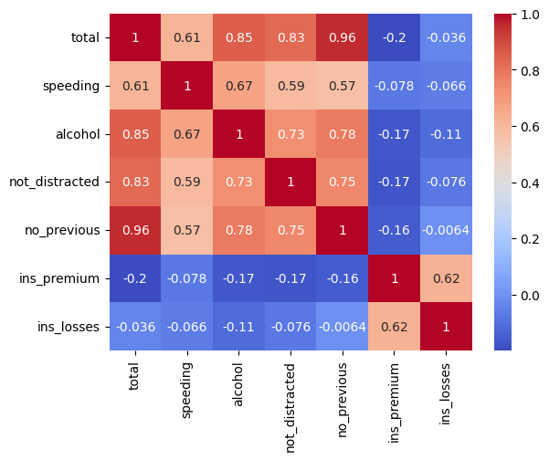
# Visualization: Violinplot of Alcohol vs. Speeding by State (Abbreviation)
sns.violinplot(data=car_crashes, x="alcohol", y="speeding", hue="abbrev")
plt.title("Violinplot of Alcohol vs. Speeding by State")
plt.xlabel("Alcohol Involvement")
plt.ylabel("Speeding Involvement")
plt.legend(title="State Abbreviation")
plt.show()
# Inference : This violinplot displays the distribution of alcohol and speeding involvement in car crashes by state. It helps us understand variations in these factors among different states.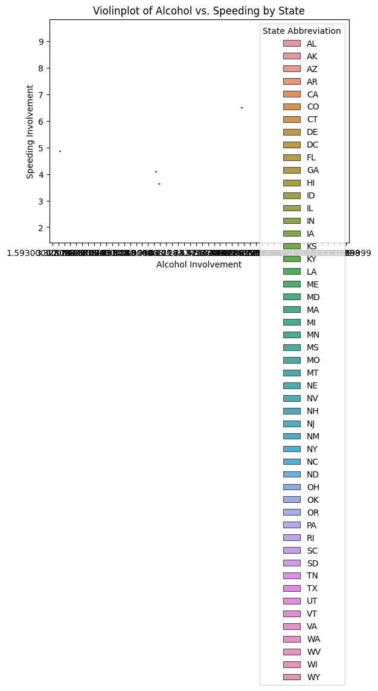